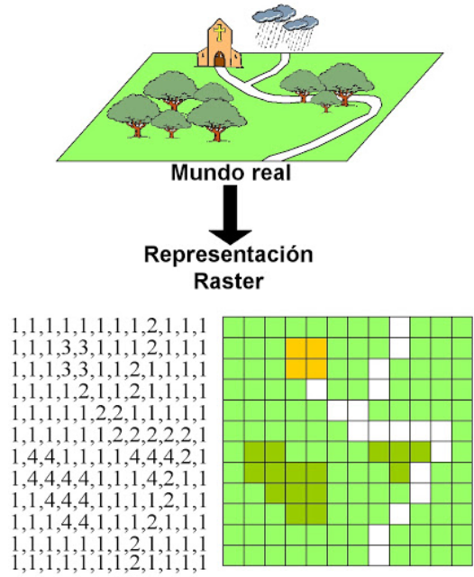
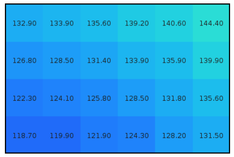
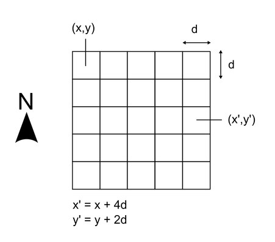

Los datos espaciales de tipo ráster representan la realidad a partir de una matriz de datos o retícula rectangular dividida en píxeles de igual tamaño, donde cada píxel tiene un valor asociado. De esta forma, el espacio se divide de forma sistemática en una serie de unidades mínimas (grilla de celdas o píxeles).

Ilustración: gvSIG
La división del espacio en unidades mínimas se lleva a cabo de forma sistemática de acuerdo con algún patrón, de tal modo que existe una relación implícita entre las celdas, ya que estas son contiguas entre sí, cubren todo el espacio, y no se solapan (Olaya, 2014).

Ilustración: Celdas de una malla ráster con sus valores asociados (Olaya, 2014).
Existen dos elementos principales para definir una capa ráster:
- Una localización geográfica exacta de alguna celda y una distancia entre celdas (para así determinar las coordenadas de las otras), y
- Un conjunto de valores (que corresponden a los valores asociados a los píxeles o celdas).
De forma explícita, el modelo ráster no incorpora las coordenadas de cada una de las celdas, por lo que para situar la malla en el espacio se define el emplazamiento de una única celda que generalmente es la celda superior izquierda. A partir de esta se establecen las coordenadas del resto, las cuales serán definidas por la fila o columna en la que se ubica dentro de la matriz.

Ilustración: (Olaya, 2014).
Respecto de los valores de las celdas, si bien es posible que contenga más de un valor, generalmente una celda contiene solo un valor que dependerá de la variable estudiada.